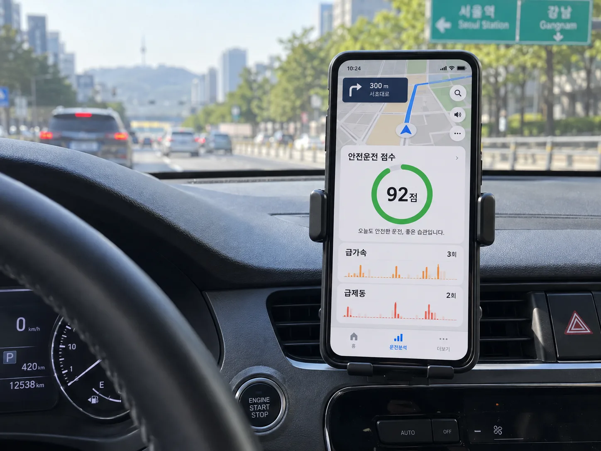
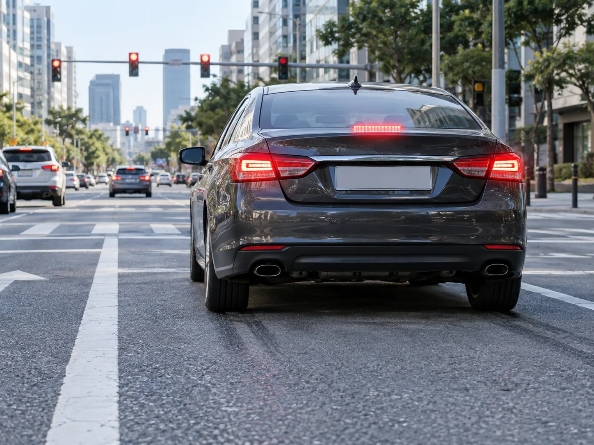
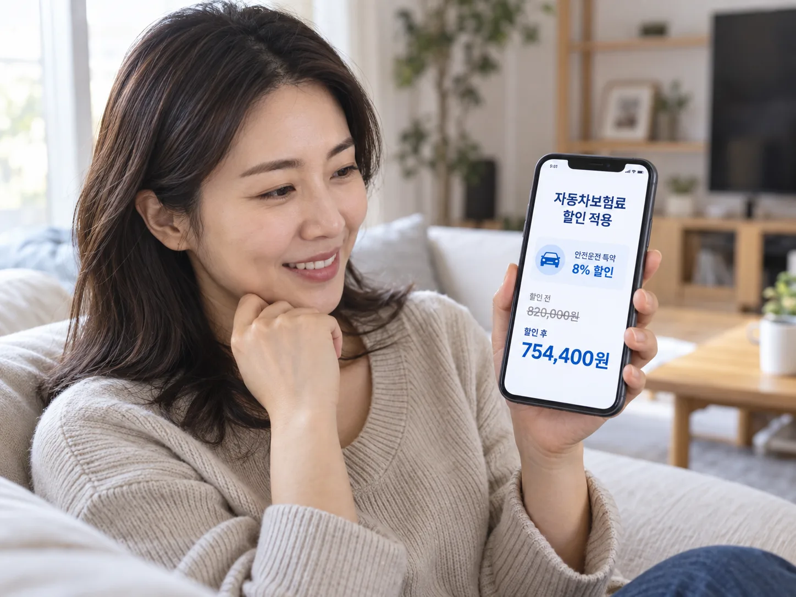
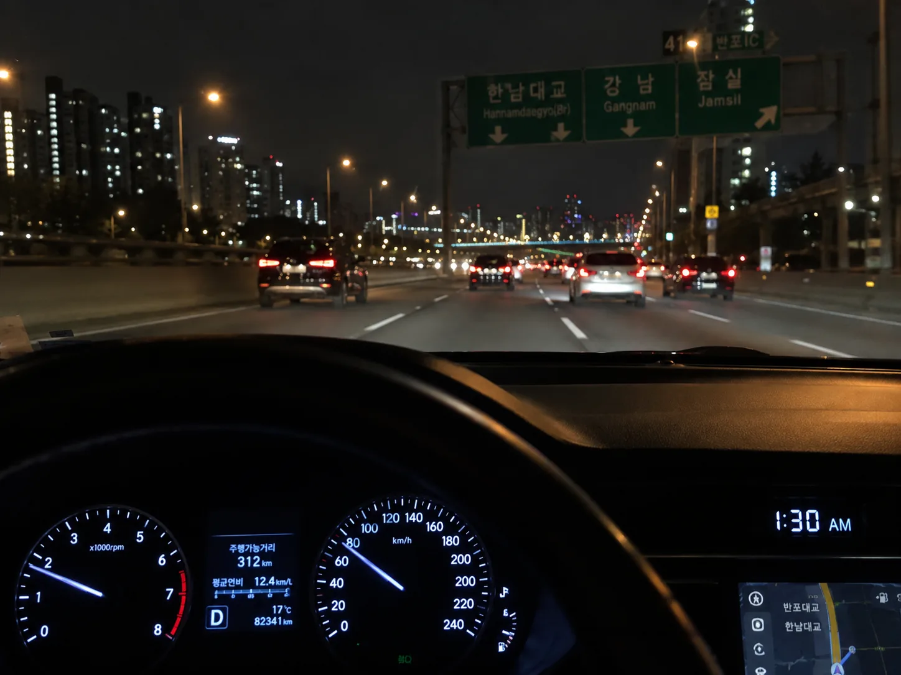

▲ 내비게이션 앱의 안전운전 점수가 보험료 할인 특약의 기준이 된다 ⓒ CarPrism
내비게이션 앱을 켜고 운전하면 보험료가 저절로 내려간다는 말을 들어본 적 있을 것이다.
정확히는 저절로가 아니다. 정해진 특약에 직접 가입해야 하고, 일정 기간 안전운전 점수를 채워야 할인이 적용된다.
이런 상품을 UBI(Usage-Based Insurance, 운전습관 연계보험)라고 부른다. 주행거리나 실제 운전 습관 데이터를 근거로 보험료를 깎아주는 방식이다.
1. UBI란 무엇인가 — 기존 보험료 산정과 뭐가 다른가
기존 자동차보험료는 차량, 운전자, 사고 이력을 기준으로 정해진다. 차종·배기량·용도, 운전자 나이·경력·사고 이력 등이 반영된다.
| 구분 | 반영 정보 |
|---|---|
| 기존 방식 | 차량 종류·배기량·용도, 운전자 나이·경력·사고 이력 |
| UBI(운전습관 연계보험) | 실제 주행거리·운전 행태 데이터 — 과속, 급가속, 급제동, 심야운전 비율 등 |
보험연구원의 2024년 보고서에 따르면, 국내 UBI는 크게 주행거리 할인 특약과 안전운전 할인 특약 두 갈래로 나뉜다. 이 글이 다루는 것은 후자, 즉 운전습관을 측정해 보험료를 깎아주는 특약이다.
📍 마일리지 특약과는 다른 특약이다
주행거리가 적으면 할인되는 마일리지 특약은 2022년 4월부터 자동 가입으로 바뀌었다. 반면 이 글에서 다루는 안전운전(운전습관) 할인 특약은 자동 가입이 아니다 — 신청하지 않으면 적용되지 않는다. 두 특약은 대체로 중복 적용이 가능하다.
2. 무엇을, 어떻게 측정하나
측정 장치는 크게 세 가지로 나뉜다. 스마트폰 내비 앱, 커넥티드카, 보험사가 제공하는 IoT 기기다.
| 장치 | 특징 |
|---|---|
| 스마트폰 내비 앱 (티맵·카카오내비·네이버지도) | 보급률이 높아 진입장벽이 낮음. 다만 대중교통에서 앱을 켜두는 등 왜곡된 정보가 기록될 수 있음 |
| 커넥티드카 (블루링크 등) | 차량 자체 통신 시스템으로 데이터 수집. 정확도는 높지만 신차 위주라 대상이 제한적 |
| 보험사 제공 IoT | 식별이 정교하지만 국내는 일부 보험사만 운영 |
측정하는 운전 행태 요소는 보험연구원 조사 기준으로 대략 다음과 같다.
✅ 안전운전 점수에 반영되는 대표 요소
· 과속 — 제한속도 초과 빈도
· 급가속·급출발 — 짧은 시간에 속도를 급격히 올리는 패턴
· 급감속·급정거 — 급브레이크 빈도
· 급회전 — 코너링 시 과도한 조향
· 운행시간대 — 심야(주로 자정~새벽) 주행 비율

▲ 급감속·급정거 빈도는 안전운전 점수를 깎는 대표적 요소다 ⓒ CarPrism
📍 산정 기준은 회사·서비스마다 다르다
같은 '안전운전 점수'라도 티맵·카카오내비·네이버지도 등 서비스 제공사마다 산출 알고리즘이 다르고, 이를 반영하는 보험사의 할인 기준(몇 점 이상, 몇 % 할인)도 제각각이다. 하나의 점수로 여러 회사를 동시에 비교할 수는 없다.
3. 보험사별 실제 특약 — 할인율이 이만큼 다르다
국내 주요 손해보험사는 이미 각자의 UBI 특약을 운영 중이다. 명칭과 조건, 할인율이 회사마다 다르다.
| 보험사 | 특약(연계 서비스) | 최대 할인율 | 주요 조건 |
|---|---|---|---|
| 삼성화재 | TMAP 착한운전 할인특약 | 26.5% | 개인승용 기명 1인, 29세 이하, 최근 6개월 500km 이상 주행, 95점 이상 |
| 현대해상 | 안전운전(UBI) 할인특약 — 커넥티드카(블루링크) | 15% | 직전 90일 1,000km 이상 주행, 70점 이상 |
| 현대해상 | 티맵 연계 + 네이버지도 추가 | 8% (+네이버지도 5%) | 직전 6개월 500km 이상 주행, 70점 이상 |
| DB손해보험 | 안전운전 할인특약 — T맵 · 카카오내비 | 회사 공시 기준 | 티맵·카카오내비 둘 중 하나만 충족해도 가입 가능 (업계 최초 도입, 2016년) |
| KB손해보험 | 티맵 안전운전 할인특약 | 27.3% | 점수 확인일 이전 6개월 500km 이상 주행, 80·90·95점 구간별 차등 |
📍 할인율은 계속 오르는 추세다
보험연구원이 2024년 조사했을 당시 국내 안전운전 할인 특약의 할인율은 3~16% 수준이었다. 이후 삼성화재·KB손보 등 일부 회사가 가입 대상을 넓히고 최고 할인율을 26~27%대까지 끌어올렸다. 해외(미국·유럽·일본)는 주행거리와 안전운전을 함께 반영해 5~40% 수준의 할인이 가능한 것으로 조사된다.
여러 회사의 자동차보험료를 한 번에 비교하려면 손해보험협회가 운영하는 공적 비교 창구를 이용할 수 있다. 보험다모아 바로가기
4. 가입 조건과 신청 방법
공통적으로 요구되는 조건은 두 가지다. '최근 일정 기간 일정 거리 이상 주행'과 '기준 이상의 안전운전 점수'.
✅ 가입 전 확인할 것
· 이용 중인 내비 앱(티맵·카카오내비·네이버지도)이 가입하려는 보험사와 연계되어 있는지 먼저 확인
· 앱 화면에서 본인의 현재 안전운전 점수를 미리 조회 — 기준 미달이면 가입 자체가 안 되는 경우가 많음
· 보험사 앱·다이렉트 사이트에서 개인정보(주행정보) 제공에 동의해야 특약 가입이 진행됨
· 월 단위·갱신 단위로 점수를 재산정하는 회사가 많아, 가입 후에도 점수가 떨어지면 할인 폭이 줄어들 수 있음

▲ 특약 가입은 자동이 아니다 — 보험사 앱에서 직접 신청하고 동의해야 할인이 적용된다 ⓒ CarPrism
5. 편법이 통할까 — 실제로는 손해로 이어진다
점수를 억지로 올리려는 시도가 없지는 않다. 버스나 택시에 탄 채로 내비 앱을 켜서 주행거리를 채우거나, 점수가 떨어지면 서비스를 초기화하고 재가입하는 식이다.
📍 실제로는 거의 걸러진다
보험사·서비스 제공사 관계자들은 이런 사례를 "극소수"로 보고 있으며, 대중교통 이용 패턴이나 이동 속도로 차량 주행과 구분되는 알고리즘을 계속 갱신하고 있다고 밝힌다. 무엇보다 가입 시점 주행거리 요건(6개월 500km 등)을 왜곡된 방식으로 채워봐야, 정작 사고가 났을 때 보험금 지급 심사에서 운행 기록 자체가 불리하게 작용할 수 있다.
참고로 심야운전 비율이 점수에 반영되는 이유도 같은 맥락이다. 심야 시간대는 사고 위험이 통계적으로 높은 구간이기 때문에, 야간 운전이 잦을수록 점수가 낮아지는 구조다.

▲ 심야 시간대 주행 비율이 높을수록 안전운전 점수는 낮아지는 구조다 ⓒ CarPrism
⚠️ 데이터 제공에 동의하기 전 알아둘 것
· 특약 가입은 곧 주행 데이터를 보험사와 공유하는 데 동의하는 것
· 위험운전 성향이 뚜렷하면 할인은커녕 갱신 시 불리한 조건으로 작용할 여지도 있음(해외 일부 UBI 상품은 이를 명시적으로 공지)
· 특약 해지·앱 연동 해제 시 기존에 받은 할인 정산 방식을 가입 전에 확인해둘 것
6. 정리 — 왜 보험사들이 UBI를 확대하는가
보험사 입장에서 UBI는 단순한 마케팅이 아니다. 실제 연구에서는 UBI 도입 후 청구건수가 약 12% 감소했다는 결과가 보고된 바 있다 — 할인이 안전운전에 대한 유인으로 작용한다는 뜻이다.
국내는 아직 안전운전 할인과 주행거리 할인이 별도 특약으로 나뉘어 있어, 두 요소를 함께 반영해 요율을 산정하는 해외(미국·유럽·일본)와는 구조가 다르다. 다만 커넥티드카 보급이 늘면서 국내에서도 두 특약의 통합, 할인 폭 확대가 이어질 가능성이 높다.
7. 요약
운전습관 연계보험(UBI)은 티맵·카카오내비 같은 내비 앱이나 커넥티드카로 측정한 안전운전 점수를 근거로 보험료를 할인해주는 특약이다. 과속·급가속·급제동·심야운전 비율 등이 측정 요소다.
회사별 할인율 차이가 크다. 삼성화재 TMAP 착한운전(최대 26.5%), KB손보 티맵 특약(최대 27.3%), 현대해상 커넥티드카 특약(15%) 등 조건과 폭이 제각각이므로 본인이 이용하는 내비 앱과 연계되는 보험사를 먼저 확인해야 한다.
특약은 자동 가입되지 않는다. 최근 6개월(또는 90일) 일정 거리 이상 주행 + 기준 점수 이상이라는 조건을 채운 뒤 직접 신청하고 데이터 제공에 동의해야 한다. 편법으로 점수를 올리려는 시도는 실효성이 낮고, 오히려 사고 시 불리하게 작용할 수 있다.